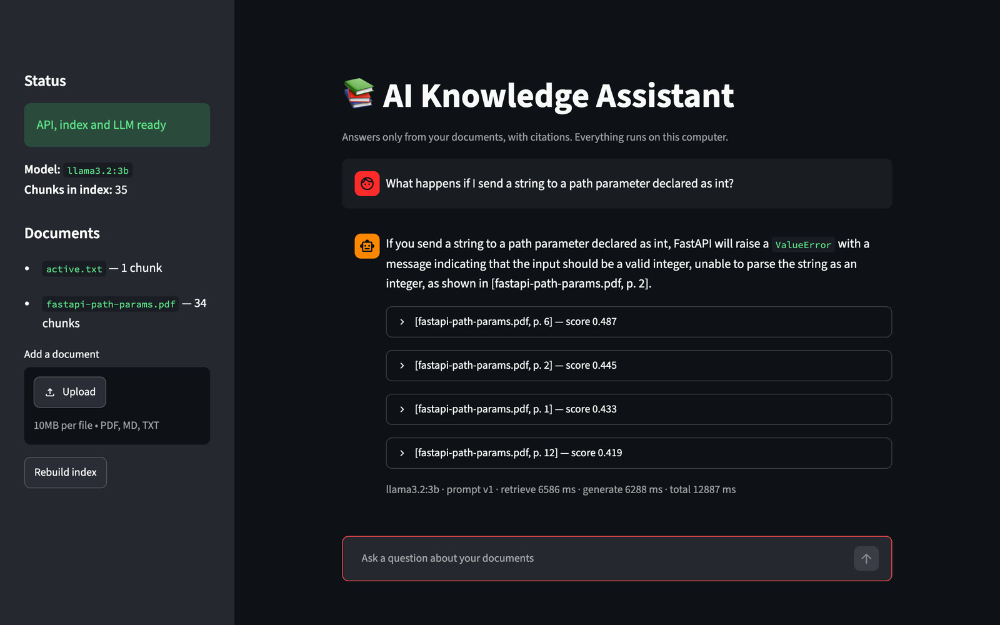

AI Knowledge Assistant
Answers only from your documents, with citations. Everything runs on this computer.
Every citation is checked.
Recorded run of the real app. The check runs in your browser.
How do I declare a path parameter with a type?
Citation check
Where the sentence came from
When it doesn't know, it says so.
Before the model is asked anything, every question is compared with your documents. If nothing is close enough, the answer is a plain refusal, and the model is never called.
What is the capital of France?
Move the line yourself.
Each dot is one of 30 test questions. Left of the line, the app refuses before asking the model.
- Should be refused (not in the PDF)
- Answerable from the PDF
- Faded: refused at this threshold
- Refused correctly
- 0
- Refused by mistake
- 0
- Let through, should refuse
- 0
Measured, not claimed.
30 questions written from one 13-page FastAPI PDF, run against the real pipeline.
- Answerable questions where a correct page was among the 4 sources the model sawRetrieval only. The same on every run.
- 0 of 24
- Citations that pointed at a retrieved sourceThree full runs of the same 30 questions. The model's wording changes a little between runs.
- Should-refuse questions the app refusedScore gate plus the model's own refusal, three runs.
- Typical time to a full answerMedian over 30 questions, three runs, on an 8 GB M1 laptop.
Run it locally.
You need Python 3.11 and Ollama. Nothing is uploaded anywhere, and no API key is needed.
- Get the code
git clone https://github.com/pranavms04/AI_Engineering_Project.git cd AI_Engineering_Project - Install
python3.11 -m venv .venv && source .venv/bin/activate pip install -r requirements.txt - Get the local model
ollama pull llama3.2:3b - Add your .pdf, .md or .txt files to data/sample_docs/, then index them
python -m scripts.build_index - Start it (three terminals), then open localhost:8501
ollama serve uvicorn app.api.main:app streamlit run ui/streamlit_app.py

It shows you where every answer came from, and it tells you when it doesn't know.